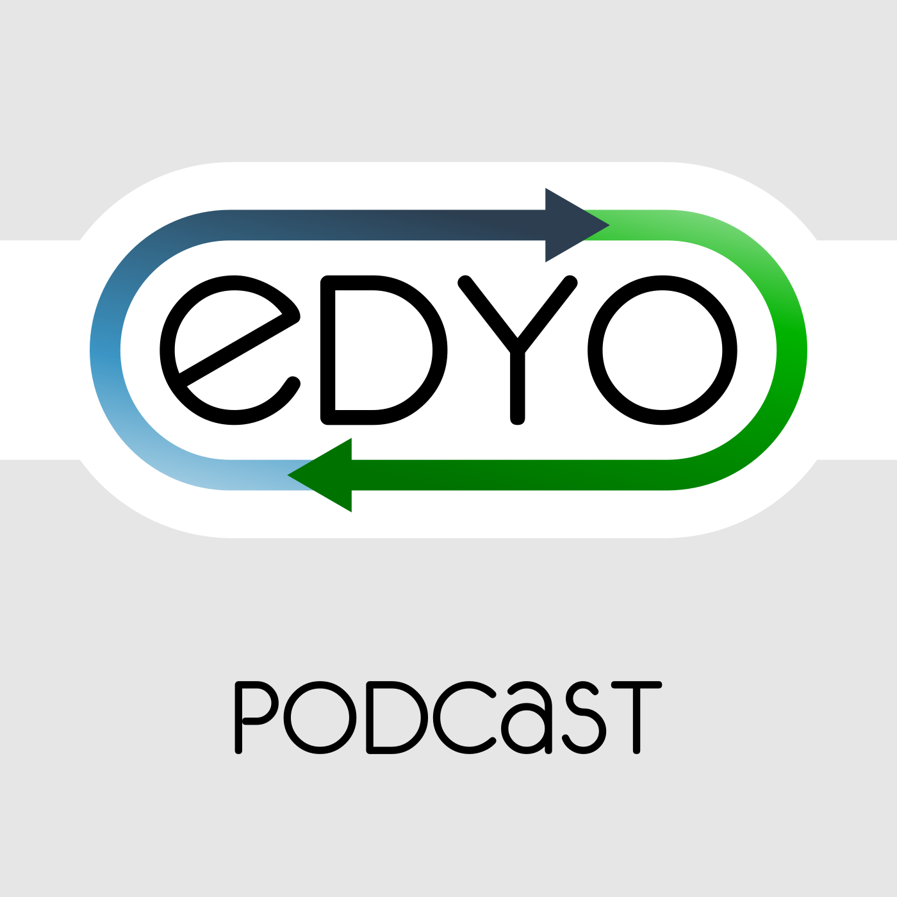

En este podcast repasaremos próximos eventos, las noticias relevantes de los últimos dos meses y discutiremos sobre temas diversos: grupo de DevOps BCN, EuroPython 2015 y "Se busca DevOps".
Esperamos que os guste.
Leer más…

AWS está poniéndose las pilas en cuanto a formación se refiere.
Este mes de septiembre propone una serie de webinarios sobre diferentes servicios, entre ellos, algunos de los más nuevos.
Muy recomendables si os interesa trabajar con los servicios que AWS ofrece como Redshift, Lambda, DynamoDB, Glacier, EC2 Container Service y otros.
Leer más…
Comentarios

HP ha estado presentando su plataforma Helion, basada en OpenStack, para permanecer en el mercado de la computación en la nube.
Por ello están llevando a cabo una campaña de divulgación de la plataforma, de la que forman parte estos cinco webinarios que presentan.
Aunque ya se ha celebrado el primero, que era de introducción, todavía estáis a punto para inscribiros en el resto.
Leer más…
Comentarios

Ya se ha anunciado la cuarta edición de la NoSQL matters Barcelona.
El evento se celebrará durante los días 20 y 21 de noviembre y, como las anteriores ediciones, tendrá lugar en la bonita Casa de la Convalescència.
El pasado día 27 de abril se anunció el inicio del período para presentar propuestas de charlas.
Hemos estado en contacto con la organización y nos han contado algunas cosas.
En este artículo podréis encontrar todo lo que sabemos por ahora.
Leer más…
Comentarios
En este podcast entrevistamos a los organizadores de la EuroPython 2015. Ésta entrevista fue gravada el día 15 de Marzo, pero por razones técnicas no hemos podido publicarla hasta ahora. En la entrevista también se habla de la enseñanza a investigadores, concretamente de la Software Carpentry.
Esperamos que os guste.
Comentarios